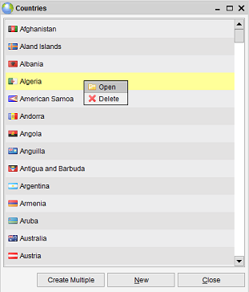

Administration of Property Items
Menu Path > Administration > Maintain
The administration menu allows you to maintain the property items, such as categories, countries and states.
The overview shows all the items in a listing, sorted alphabetically. You can edit an item by opening it.

Filter
You can filter by typing in the text field located at the top of the screen. The items are filtered while you are typing.
It looks for items where the name starts with the entered value. Removing the entered text will cause all items to be shown.
Create Multiple
If you want to create multiple items at once, press the "Create Multiple" button.

To add a row to this overview press the "Add" button. Click on the row and start typing.
Once you have entered information for all the lines you have added press the "Save" button.
Your items are created!
Opening an item
Double-click on the item and it will open the item form.
From here you can view and/or edit the item (depending on your privileges in the
security and the general settings).
Deleting an Item
If you right-click on one of the items you can choose to delete the item.
The item cannot be deleted in case it has been used by other items. For example, if you have a country
which has been assigned to 3 movies you won't be able to delete the item. The system will notify of this.
To delete it you'll first have to remove all the references to the item (see next paragraph).
Deleting Unassigned Items
If the list has gotten very long it might be a good idea to remove all items which are not in use (for
example a state which has not been set on any item). Select "Edit" from the menu and select the "Delete Unassigned" option.
Merging Items
You can merge multiple items into one item. This is explained here.
Related items / References
To view how the item has been used open the item and take a look at the related item tab of the
item form.
Settings
The Settings menu contains the General Field Settings and the
Item Form Settings options.